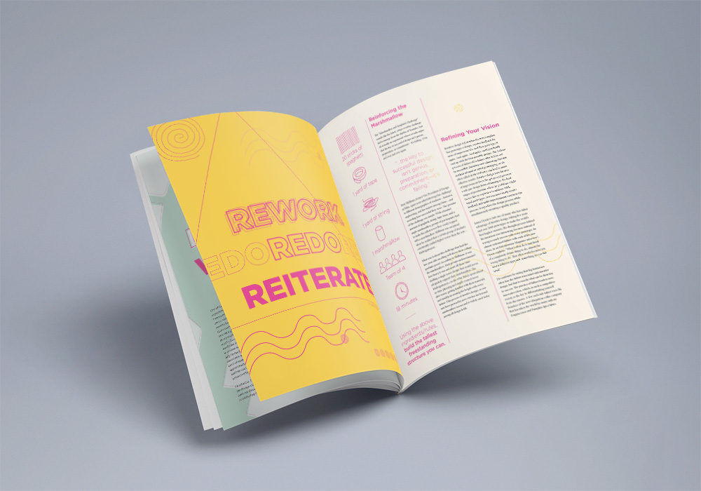

About Us
InPrint Magazine is a student-run publication that caters towards design students and students interested in design. We seek to build a design community and foster relationships within that community through casual conversation.
By encouraging critical design conversations, inspiring growth in students' design work, and promoting accessibility to the design industry, we hope to build a stronger community among design students, alumni, and faculty.

Issue No. 1
First Impressions
This issue is an introduction to the design community at UC Davis through curated articles, interviews, and galleries of student work. We explore our first impressions of what design is, and how our definition of it changes with time. We get to hear from the perspectives of current students at Davis, recent alumni, and faculty about what design is to them. We hope this magazine leaves you with a great First Impression!
Keep an eye out for the 2017-2018 issue!